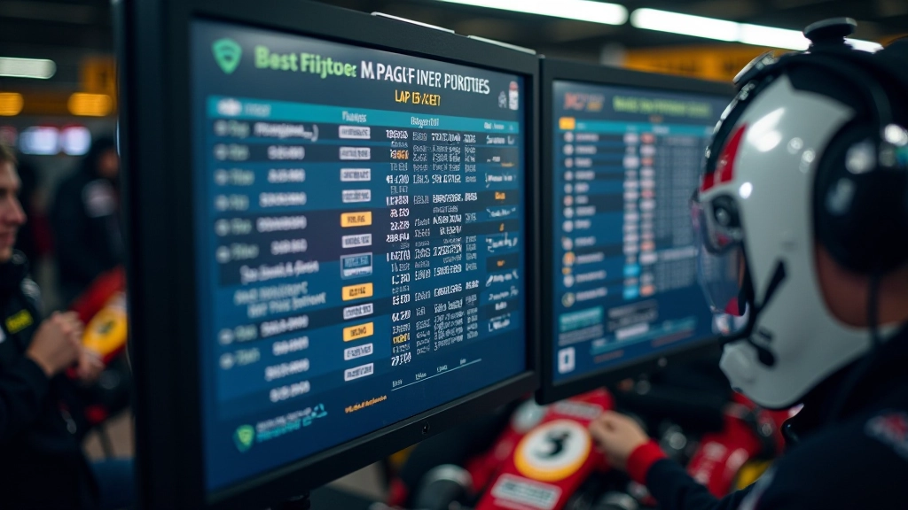

قياس الأداء: ما الذي يجب تتبعه
لا تحتاج إلى أدوات معقدة لتبدأ. أبسط الأرقام هي الأقوى: أوقات اللفات. كل لفة تخبرك قصة. هل كانت أسرع من السابقة؟ هل بدأت تتراجع نحو نهاية السباق؟ هل هناك فرق كبير بين أوقات السائقين المختلفين؟
المقاييس الأساسية للتتبع
- أسرع لفة وأبطأ لفة لكل سائق
- متوسط الأوقات عبر فترات السباق
- الفارق بين أداء السائقين
- سرعة الخروج من المنعطفات
- استهلاك الوقود الفعلي مقابل المتوقع
بدون هذه الأرقام، أنت تقود السباق بعينيك مغلقة. مع البيانات، تصبح استراتيجي حقيقي.

تحليل البيانات أثناء السباق
الحقيقة؟ لا تنتظر حتى ينتهي السباق لتحليل البيانات. أنت بحاجة إلى فهم ما يحدث الآن. عندما يأتي السائق إلى الحفرة، يجب أن تعرف بالفعل ما الذي تريد التحقق منه.
التحليل السريع في الحفرة
خذ 30 ثانية فقط لمراجعة الأرقام. هل أوقات هذه اللفات أفضل من الدورة السابقة؟ هل الإطارات تفقد القبضة؟ هل نحتاج إلى تعديل استراتيجية الوقود؟
في سباق مدته 6 ساعات أو أكثر، كل دقيقة تُحدث فرقاً. البيانات تساعدك على اتخاذ القرارات بسرعة، بدلاً من الاعتماد على الحدس وحده. أحياناً الحدس يخطئ. البيانات لا تخطئ.
الاستراتيجية القائمة على الأرقام
عندما تعرف الأرقام، تستطيع أن تخطط بذكاء أكثر. مثلاً: إذا كان السائق الأول يبطئ بحوالي 2-3 ثوان لكل لفة بعد 45 دقيقة من القيادة المكثفة، تعرف أنك بحاجة إلى جدول تبديل يأخذ هذا في الحسبان. لا تنتظر حتى يكون الأداء سيئاً جداً.
التخطيط للوقود
البيانات تخبرك كم وقود تحتاج فعلاً. إذا كنت تقود بقوة، تستهلك أكثر. إذا كنت متحفظاً، تستهلك أقل. من خلال تتبع استهلاك الوقود عبر عدة لفات، يمكنك حساب الحد الأدنى من محطات التزود التي تحتاجها. هذا يعني توفير دقائق ثمينة.
جدول التبديل الأمثل
إذا كنت تعرف متى يبدأ السائق في الإرهاق، تستطيع تحديد جدول تبديل يبقي الفريق في أفضل حالة. لا تنتظر حتى يكون الأداء مكسورة. البيانات تخبرك متى تبدأ الكفاءة في الانخفاض، وتبدل قبل فوات الأوان.

أدوات بسيطة للبدء
لا تحتاج إلى برنامج احترافي معقد. تذكر، نحن نتحدث عن فريق كارتينج، ليس فريق فورمولا 1. جدول بسيط في Excel أو Google Sheets يعمل بشكل رائع. ورقة وقلم أيضاً يعملان إذا كنت منظماً.
جدول تتبع اللفات
أعمدة بسيطة: رقم اللفة، وقت اللفة، السائق، الملاحظات (طقس، حالة الإطارات). هذا كل ما تحتاجه لمعظم السباقات.
ساعة توقيت يدوية
أداة قديمة الطراز لكنها فعالة. شخص واحد في الحفرة يسجل الأوقات كما تمر السيارات. بسيط وموثوق.
تطبيق الهاتف
هناك تطبيقات مجانية لتتبع الأوقات. تدخل أوقات اللفات مباشرة في الهاتف، وتراجعها على الفور. يعمل بشكل جيد للفرق الصغيرة.
ما يهم حقاً ليس الأداة، بل الانضباط في التسجيل. إذا نسيت تسجيل اللفات، فلا فائدة من الأداة الرائعة.
الدروس المستفادة بعد السباق
بعد انتهاء السباق، تأتي الجزء الممل لكن الأهم: مراجعة البيانات. اجلس مع فريقك وادرس الأرقام. أين فزتم؟ أين خسرتم الوقت؟
تحديد نقاط الضعف هو أول خطوة نحو التحسن. إذا اكتشفت أن سائقك الثاني يأخذ منعطف معين ببطء أكثر بـ 0.5 ثانية من الآخرين، يمكنك العمل عليه في التدريب التالي. هذا تطور حقيقي.

أسئلة لطرحها في المراجعة
- هل كانت أوقات اللفات متسقة أم متذبذبة؟
- هل حدث انخفاض حاد في الأداء في نقطة معينة من السباق؟
- هل استهلاك الوقود طابق توقعاتنا؟
- هل التبديلات حدثت في الوقت الأمثل؟
- ما الذي يمكننا فعله بشكل مختلف في المرة القادمة؟
الخلاصة
تحليل البيانات ليس معقداً كما قد يبدو. هو ببساطة: تسجيل الأرقام، ومراجعتها، والتعلم منها. في سباقات التحمل، حيث تُحسب كل ثانية، يمكن لهذه العادة البسيطة أن تحول فريقك من متوسط إلى منافس جاد.
ابدأ الآن. في السباق التالي، احمل دفتراً وقلماً. سجل أوقات اللفات. راجع البيانات بعد كل جلسة. ستندهش من مدى سرعة رؤيتك للنمط والتحسن. هذا هو القوة الحقيقية للبيانات.
ملاحظة مهمة
هذه المقالة توفر إرشادات عملية تعليمية حول استخدام البيانات في سباقات التحمل. الظروف قد تختلف من سباق إلى آخر، وكل فريق قد يحتاج إلى تطبيق استراتيجيات مختلفة بناءً على سيارتهم والمضمار والعوامل الأخرى. يُنصح بالتشاور مع مدربي وخبراء السباقات ذوي الخبرة عند تطبيق هذه الاستراتيجيات على سباقات حقيقية.